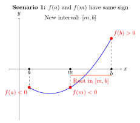
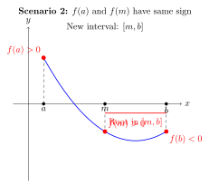

What is a generator?
A generator is a function that uses the yield keyword to return an item. When a generator function is called, it returns a generator object, which is a type of iterator. Here is a simple generator, that produces a sequence of numbers:
def number_generator(n):
for i in range(n):
yield i
gen = number_generator(1_000_000)
print(next(gen))
print(next(gen))
print(next(gen))0
1
2The state of the generator is saved between yield calls. The state of generator is the state of the local variables when the generator is suspended. This allows it to resume where it left off.
The main use of generators is to save memory - instead of having a very large list of elements in memory, holding everything at once, we have an object that knows how to produce each particular element, one at a time. This enables lazy computations of heavy objects in memory.
Example: Flattening a list of lists
A common task is to flatten a list of lists into a single list.
Imagine you have a list of trades, where each trade has a list of associated cashflows. You want to process all cashflows from all trades.
# Ref: bwrob.github.io/posts/python-academy-iteration
trades_cashflows = [
[10, 20, 30], # Cashflows for trade 1
[15, 25], # Cashflows for trade 2
[100, -10, 5], # Cashflows for trade 3
110 # Simple payment doesn't need to be in a list
]
def flatten(list_of_lists):
for item in list_of_lists:
if isinstance(item, list):
for subitem in item:
yield subitem
else:
yield item
# The generator does not hold all cashflows in memory
all_cashflows_generator = flatten(trades_cashflows)
for cf in all_cashflows_generator:
print(cf, end=" ")10 20 30 15 25 100 -10 5 110 This flatten generator is memory-efficient. It only needs to store one cashflow at a time, regardless of the total number of cashflows.
Example: Generating the fibonacci sequence
The Fibonacci sequence is defined by the recurrence relation: \(F_n = F_{n-1} + F_{n-2}\) with seed values \(F_0 = 0\) and \(F_1 = 1\). A naive implementation of this in Python is a direct translation of the mathematical formula:
For n=40, this already takes a long amount of time. We are doing lot of rework. Another way to solve this problem is to use an iterative approach.
We can also code up a generator to produce the fibonacci sequence.
Generator expressions
List comprehensions are widely used in Python. However, many of the use-cases do not need to have the full list created in-memory. Instead, they only need to iterate over the elements one at a time.
For example, the following summation code will build a full list of squares in memory, iterate over those values, and when the reference is no longer needed, delete the list.
Memory is conserved by using a generator expression instead.
Consider taking the inner product of the vectors x_vector and y_vector:
Iterators
An iterator is an object that represents a stream of data. It produces one item at a time, only when requested. This lazy evaluation is incredibly memory-efficient. The iterator protocol in Pythoon consists of two methods:
__iter__(): Returns the iterator object itself__next__(): Returns the next item from the stream. When there are no more items, it raise aStopIterationexception.
Having these protocols in Python has an advantage: everyone know that Python will be familiar with this interface already, so there a sort of standard contract.
Example : Finding the implied volatility of European vanilla options using an iterative root-solver
For the purposes of this example, I will use the bisection method to solve for the implied volatility of a European call option.
The bisection method makes use of the intermediate value theorem(IVT) from Real Analysis. The intermediate value theorem states that the image of a continuous function \(f\) over an interval \((a,b)\) is an interval. If \(f\) is a continuous function, it preserves intervals. If we take an interval and apply a continous function \(f\) to it, the image is also an interval. It captures the intuitive notion, there are no gaps or jumps in a continuous curve. If \(f\) is continuous and \(f(a) < k <f(b)\), then there exists an element \(c\in(a,b)\), such that \(f(c)=k\).
Iteration process
We start with an initial interval \([a,b]\), such that the function values \(f(a)\) and \(f(b)\) are of opposite sign.
Step 1. We calculate the midpoint \(m = (a + b)/2\).
Step 2. Case I. If \(f(a)\) and \(f(m)\) have the same signs, the root must be in the right half \([m,b]\). So, we set \(a=m\).
Case II. If \(f(m)\) and \(f(b)\) have the same signs, the root must be in the left half \([a,m]\). So, we set \(b=m\).
We iteratively perform steps (1) and (2) until the absolute or relative error is within a certain tolerance \(\epsilon\).
Show the code
%%itikz --temp-dir --tex-packages=tikz --tikz-libraries=backgrounds --implicit-standalone
% Scenario 1: Root in left half
\begin{tikzpicture}[scale=1.2, background rectangle/.style={fill=white}, show background rectangle]
% Axes
\draw[->] (-0.5,0) -- (5,0) node[right] {$x$};
\draw[->] (0,-2.5) -- (0,2.5) node[above] {$y$};
% Points
\coordinate (a) at (0.5,0);
\coordinate (b) at (4.5,0);
\coordinate (m) at (2.5,0);
% Function curve (convex)
\draw[thick, blue, domain=0.5:4.5, samples=100]
plot (\x, {0.3*(\x-1.5)*(\x-1.5) - 1.2});
% Vertical lines and points
\draw[dashed] (0.5,0) -- (0.5,{0.3*(0.5-1.5)*(0.5-1.5) - 1.2});
\draw[dashed] (2.5,0) -- (2.5,{0.3*(2.5-1.5)*(2.5-1.5) - 1.2});
\draw[dashed] (4.5,0) -- (4.5,{0.3*(4.5-1.5)*(4.5-1.5) - 1.2});
% Function values
\fill[red] (0.5,{0.3*(0.5-1.5)*(0.5-1.5) - 1.2}) circle (2pt)
node[below left] {$f(a) < 0$};
\fill[red] (2.5,{0.3*(2.5-1.5)*(2.5-1.5) - 1.2}) circle (2pt)
node[below right] {$f(m) < 0$};
\fill[red] (4.5,{0.3*(4.5-1.5)*(4.5-1.5) - 1.2}) circle (2pt)
node[above right] {$f(b) > 0$};
% x-axis labels
\fill (0.5,0) circle (1.5pt) node[below] {$a$};
\fill (2.5,0) circle (1.5pt) node[below] {$m$};
\fill (4.5,0) circle (1.5pt) node[below] {$b$};
% Root indicator
\draw[thick, red] (2.5,-0.3) -- (4.5,-0.3);
\node[red] at (3.5,-0.6) {Root in $[m, b]$};
% Title
\node[align=center] at (2.5,3) {\textbf{Scenario 1:} $f(a)$ and $f(m)$ have same sign};
\node[align=center] at (2.5,2.5) {New interval: $[m, b]$};
\end{tikzpicture}
Show the code
%%itikz --temp-dir --tex-packages=tikz --tikz-libraries=backgrounds --implicit-standalone
\begin{tikzpicture}[scale=1.2, background rectangle/.style={fill=white}, show background rectangle]
% Axes
\draw[->] (-0.5,0) -- (5,0) node[right] {$x$};
\draw[->] (0,-2.5) -- (0,2.5) node[above] {$y$};
% Points
\coordinate (a) at (0.5,0);
\coordinate (b) at (4.5,0);
\coordinate (m) at (2.5,0);
% Function curve (convex)
\draw[thick, blue, domain=0.5:4.5, samples=100]
plot (\x, {0.3*(\x-3.5)*(\x-3.5) - 1.2});
% Vertical lines and points
\draw[dashed] (0.5,0) -- (0.5,{0.3*(0.5-3.5)*(0.5-3.5) - 1.2});
\draw[dashed] (2.5,0) -- (2.5,{0.3*(2.5-3.5)*(2.5-3.5) - 1.2});
\draw[dashed] (4.5,0) -- (4.5,{0.3*(4.5-3.5)*(4.5-3.5) - 1.2});
% Function values
\fill[red] (0.5,{0.3*(0.5-3.5)*(0.5-3.5) - 1.2}) circle (2pt)
node[above left] {$f(a) > 0$};
\fill[red] (2.5,{0.3*(2.5-3.5)*(2.5-3.5) - 1.2}) circle (2pt)
node[above right] {$f(m) < 0$};
\fill[red] (4.5,{0.3*(4.5-3.5)*(4.5-3.5) - 1.2}) circle (2pt)
node[below right] {$f(b) < 0$};
% x-axis labels
\fill (0.5,0) circle (1.5pt) node[below] {$a$};
\fill (2.5,0) circle (1.5pt) node[below] {$m$};
\fill (4.5,0) circle (1.5pt) node[below] {$b$};
% Root indicator
\draw[thick, red] (0.5,-0.3) -- (2.5,-0.3);
\node[red] at (1.5,-0.6) {Root in $[a, m]$};
% Title
\node[align=center] at (2.5,3) {\textbf{Scenario 2:} $f(m)$ and $f(b)$ have same sign};
\node[align=center] at (2.5,2.5) {New interval: $[a, m]$};
\end{tikzpicture}
A call option is the right to buy an asset at a future time \(T\), at a pre-determined price \(K\). A put option is the right to sell an asset at a future time \(T\), at a pre-determined price \(K\).
Vanilla options have two quote conventions - they can be quoted in terms of a price (in dollar terms) or in terms of the implied volatility. The Black-Scholes analytic formula used as a converter to convert an implied-vol quote to a price.
Let \(\sigma\) be the market-implied volatility of the option. Then, the call option price is given by:
\[ C_{BS}(\sigma) = S_t \Phi(d_{+}) - K e^{-r(T-t)}\Phi(d_{-}) \]
where
\[ d_{\pm} = \frac{\log(S_t/K) + (r \pm \sigma^2/2)(T-t)}{\sigma \sqrt{T-t}} \]
Conversely, if we have the observed marker option quote \(C_{BS}\), we can backout the implied volatility \(\sigma\), by solving for the root of the above equation.
Thus, we can define
\[ f(\sigma) = S_t \Phi(d_{+}) - K e^{-r(T-t)}\Phi(d_{-}) - C_{BS} \]
and find the root of \(f\). Assume that the root lies in the interval \([0,1]\).
import math
from typing import Callable
def d_plus(S, K, T, r, sigma):
"""d+ term of the Black formula"""
return (math.log(S / K) + (r + sigma**2/2) * T)/(sigma * math.sqrt(T))
def d_minus(S, K, T, r, sigma):
"""d- term of the Black formula"""
return (math.log(S / K) + (r - sigma**2/2) * T)/(sigma * math.sqrt(T))
def norm_cdf(x : float):
"""An approximation to standard normal CDF."""
k = 1.0/(1.0 + 0.2316419*x);
k_sum = k*(0.319381530 + k*(-0.356563782 + k*(1.781477937 + k*(-1.821255978 + 1.330274429*k))));
if x >= 0.0:
return (1.0 - (1.0/(pow(2*3.14159,0.5)))*math.exp(-0.5*x*x) * k_sum);
else:
return 1.0 - norm_cdf(-x);
def call_option_price(
S : float, K : float, r: float, T: float, sigma: float
):
"""The price of European vanilla call option."""
d_1 = d_plus(S, K, T, r, sigma)
d_2 = d_minus(S, K, T, r, sigma)
return S * norm_cdf(d_1) - K * math.exp(-r * T) * norm_cdf(d_2)
class BisectionSolver:
"""A solver that iteratively halves the search interval"""
def __init__(self, y_target: float,
a: float,
b: float,
epsilon: float,
g : callable):
self.y_target = y_target
self.a = a
self.b = b
self.epsilon = epsilon
self.g = g
self.m = 0.5 * (self.a + self.b)
self.y = g(self.m)
self.i = 1
def __iter__(self):
"""Return the iterator object (self)"""
return self
def __next__(self):
"""Advance one step to generate the next iterate"""
if abs(self.y - self.y_target) < self.epsilon:
raise StopIteration
if self.y - self.y_target < 0:
self.a = self.m
if self.y - self.y_target > 0:
self.b = self.m
m = self.m
i = self.i
self.i += 1
self.m = 0.5 * (self.a + self.b)
self.y = self.g(self.m)
return (i,m)
if __name__ == "__main__":
S=100
K=100
r=0.05
T=1.0
market_quote = 10.450577973198428
def g(sigma: float):
return call_option_price(S, K, r, T, sigma)
solver = BisectionSolver(market_quote, 0.0, 1.0, 0.5e-5, g)
for iter in solver:
i, root = iter
print(f"Iteration# : {i}, root estimate : {root}")Iteration# : 1, root estimate : 0.5
Iteration# : 2, root estimate : 0.25
Iteration# : 3, root estimate : 0.125
Iteration# : 4, root estimate : 0.1875
Iteration# : 5, root estimate : 0.21875
Iteration# : 6, root estimate : 0.203125
Iteration# : 7, root estimate : 0.1953125
Iteration# : 8, root estimate : 0.19921875
Iteration# : 9, root estimate : 0.201171875
Iteration# : 10, root estimate : 0.2001953125
Iteration# : 11, root estimate : 0.19970703125
Iteration# : 12, root estimate : 0.199951171875
Iteration# : 13, root estimate : 0.2000732421875
Iteration# : 14, root estimate : 0.20001220703125
Iteration# : 15, root estimate : 0.199981689453125
Iteration# : 16, root estimate : 0.1999969482421875
Iteration# : 17, root estimate : 0.20000457763671875
Iteration# : 18, root estimate : 0.20000076293945312
Iteration# : 19, root estimate : 0.1999988555908203
Iteration# : 20, root estimate : 0.19999980926513672
Iteration# : 21, root estimate : 0.20000028610229492We see that a \(1\)-year call option struck at \(K=100\) with the underlying spot at \(100\), annualised interest rate \(r=0.05\) with market price \(C_{BS}=10.45\) corresponds to an implied volatility of \(\sigma_{BS}=0.20\).
While this toy solver uses the Bisection algorithm, the bisection method has a slow rate of convergence. The Brent-Dekker algorithm is considered the industry standard for root finding.
Many numerical solvers for finding roots, finding solutions of ODEs and PDEs are iterative in nature.
Challenge question
Here is a challenge question to test your understanding. Observe the code snippet below. What will print(type(t)) output?
lst = [1,2,3,4,5,6,7,8,9,10]
l = [n ** n for n in lst]
s = {n ** n for n in lst}
d = {n : n **n for n in lst}
t = (n ** n for n in lst)
print(type(l))
print(type(s))
print(type(d))
print(type(t))For more such questions, visit getcracked.io.